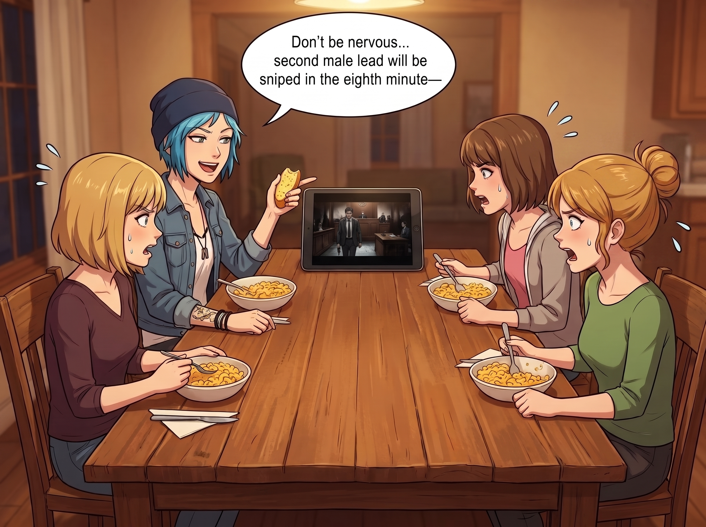
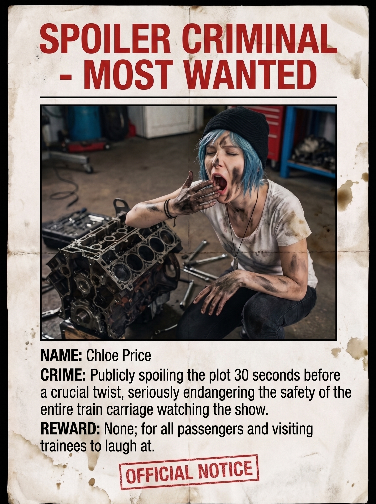

劇透戰犯通緝令


晚餐時間，長木桌正中央的 iPad 正在播放一部高分懸疑破案美劇的第二季大結局。
桌上的熱烤起司通心粉才吃到一半，四個人的目光全被屏幕上幽暗的法庭對峙戲給吸了進去。主角正一步步走向證人席，背景音樂拉起尖銳壓抑的提琴長音，整個車廂安靜得只剩下吞咽口水的聲音——
就在這千鈞一髮之際，嚼著大蒜麵包的 Chloe 腦袋裡的惡魔開關突然「啪」地一聲合上了。
她翹著二郎腿，用一種極其欠揍、漫不經心的語調，對著屏幕指指點點：
「別緊張了，長官、大股東。坐在第三排那個戴金絲眼鏡的瘸腿老頭才是幕後真凶，女主手裡的錄音帶在下一分鐘就會被證物官調包，而且男二在第八分鐘會直接被狙擊手——」
一、審判降臨
「Price——！！」
Victoria 握著銀叉的手指關節瞬間發白，那雙藍灰色的眼眸裡噴出的怒火甚至能融化車床上的鈦合金。
「Chloe！妳怎麼可以這樣！」連一向溫柔的 Kate 都放下了手裡的南瓜濃湯，鼓起腮幫子，露出了罕見的「大天使怒顏」。
Max 默默按下暫停鍵，把進度條拉回了劇透前的那一分半鐘，然後轉頭盯著 Chloe，眼神裡沒有平時的縱容，只有冷靜到可怕的算計。
「Chloe Price，」Max 緩緩開口，語氣平靜得像是在宣讀判決書，「妳知道妳剛才做了什麼嗎？」
Chloe 這才後知後覺地意識到氣氛不對，訕訕地放下麵包：「呃……就、就隨口分析一下劇情走向而已？」
二、通緝令與強制預測條款
十分鐘後，長木桌前上演了一場前所未有的「工坊立法會議」。
Victoria 拿出手機，翻出一張 Chloe 上週修車時滿臉黑油、嘴巴張得老大打哈欠的醜照，配上鮮紅色的粗體大字，印成了一張正式的「A4通緝海報」：
【劇透戰犯 · 頭號通緝】 姓名：Chloe Price 罪行：在關鍵反轉前三十秒公然劇透，嚴重危害車廂集體觀劇安全 懸賞：無，僅供全員與到訪學員嘲笑觀賞
「這張要貼在哪裡？」Chloe 臉色發白。
「二號車廂的公佈欄，」Victoria 慢條斯理地用膠帶固定好海報的四個角，「Miles 和學員們每天上課都會經過那裡。」
Kate 則翻開她那本粉色記事本，溫柔卻不容反駁地宣布了另一項新規：「從今天起，Chloe 想繼續跟我們一起看劇，可以，但每一集開播前，妳必須先大聲說出妳對接下來劇情的『預測』。」
「這……這有什麼意義？」
「如果妳猜對了，」Kate 眼睛彎成月牙，笑容純潔無害，「就證明妳其實是靠推理猜到的，不算真正的劇透，我們既往不咎。但如果妳猜錯了——」
「猜錯了會怎樣？」
「猜錯一次，」Max 接過話頭，語氣平淡，「今晚的洗碗排班表妳全包一週。猜錯兩次，妳要在群組裡公開發一張剛才那張通緝海報的九宮格拼圖，並配文『我是不會看劇只會亂猜的笨蛋』。」
Chloe 徹底石化。
三、當場處刑的第一輪預測
「現在，」Victoria 端起紅茶，居高臨下地看著她，「請 Price 女士當場預測一下，接下來三十秒，法庭上會發生什麼？」
Chloe 冷汗直流，絞盡腦汁：「呃……女主會突然……翻出一份新證據？」
畫面重新播放。三十秒後，劇情裡的女主角只是平靜地喝了一口水，什麼新證據都沒有翻出來。
「猜錯了呢，Chloe。」Kate 溫柔地在記事本上畫了一個正字。
「不是吧……」Chloe 欲哭無淚地癱倒在椅子上，看著牆上那張自己滿臉油污的通緝海報，感覺尊嚴正在以肉眼可見的速度流失，「老娘寧願被妳們按在沙發上呵癢也不要這個……」
「說得好像我們會給妳選項一樣。」Victoria 冷笑一聲，優雅地翻開下一頁劇情，「洗碗表已經貼在冰箱上了，Price。」
四、塵埃落定
長木桌上的起司通心粉依然冒著微熱的香氣，屏幕上的懸疑音樂再次悠揚響起。
Chloe 這一整週，不僅要包辦所有洗碗工作，還得在每次開播前戰戰兢兢地做出預測，每猜錯一次，臉頰就以肉眼可見的速度垮下去一分。而那張貼在公佈欄上的通緝海報，成了往後每個路過的學員忍不住多看兩眼、偷笑一下的經典裝飾。
在充滿了笑鬧與威脅的二號車廂裡，劇透狂魔用一整週的洗碗工作與滿牆的社死海報，換來了工坊最不可撼動的第一鐵律——「吃飯看劇時，誰敢劇透，通緝到底。」